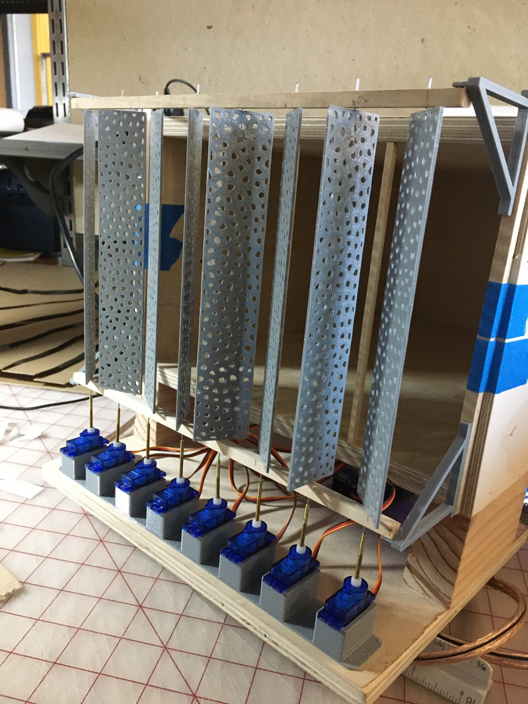

Dynamic Facade
Planning
Originally the project was laid out as follows:
- Single stepper motor which moved the vertical blinds through a system of 3D printed gears.
- ESP8266 in order to move the stepper simply back and forth in a set time period.
- Code written using the Arduino SDK in order to take advantage of the stepper libraries.
I prototyped a board using a DRV8826 driver module with a spare 200 step/rotation stepper left over from a 3D printer upgrade. Once I had some physical hardware I got that rotating using an example and started to suggest possible upgrades:
- Individual control of blinds using cheap SG90 servo motors.
- Remote control of orientation.
My girlfriend and her group were pleased with the progress and due to the difficulty of printing enough gears to actuate the blinds, readily agreed to the idea of using SG90 servos. The remote orientation control was met with a little resistance as they really wanted to keep the ability to have automatic rotations. So I proposed a staged development cycle:
- Stage 1 — Remote start/stop of set automatic movement for all blinds; individual control of all 8 servos; Android app for remote control
- Stage 2 — Remote calibration procedure; remote position seeking
- Stage 3 — Adjustable speed and acceleration for movement profiles; programmable positions in app
- Stage 4 — Individually timed movements for each blind
By proceeding in stages they would be sure to meet the minimal requirements. Due to time constraints, Stage 4 was never finished.
Design
The controller is a function-based monolithic architecture. Rather than using an object-oriented approach I inherited the functional approach used in many of the samples I took inspiration from. This approach was fine for the quick development cycle but would need refactoring to expand much further. The functions follow the Unix style — do only one thing and do it well — while keeping global variables to a minimum. Unfortunately, to simplify the motion control algorithm some control values were defined globally.
Communication uses a simple HTTP server that listens for messages along certain paths. Messages are processed through the ESPAsync library and passed to callbacks depending on the accessed URL, which then passes the payload to that callback.
The controller can also save its current settings to the SPIFFS filesystem. This is persistent through reboots and retains settings. Some settings are transmitted back to the client application on boot; others such as the configured position list are saved on the client device. An example of the custom position controller:

Once a destination is set, the motion planner takes control — called on every update, it returns the next desired position for each individual servo. This is a simple step motion planner that takes advantage of the built-in servo acceleration. Once all servos have reached their destination the run state variable switches to false, which tells the main program oscillation logic when to start timers if oscillation is turned on:
Future
This program has the capability to be greatly expanded, though it would likely need an almost complete rewrite to reorganise into modular classes. Some possible upgrades:
- Expand command input to:
- Listen to OpenHAB, Google Home, or others
- Allow input based on light level through a photoresistor or solar panel
- Allow input based on a generic MQTT server
- Configure a neural net based on seasonal changes for optimal temperature sustainment (e.g. open blinds at night in summer to allow heat out, close during the day to block heat input)
- Configurable open/close based on time and calendar
- Expand power supply option to include LiPo or Li-Ion with management
- Expand motor option to add back stepper control